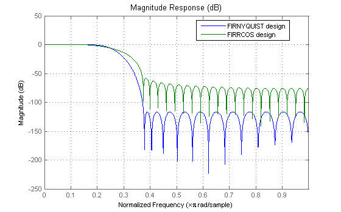
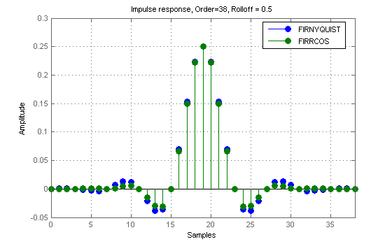
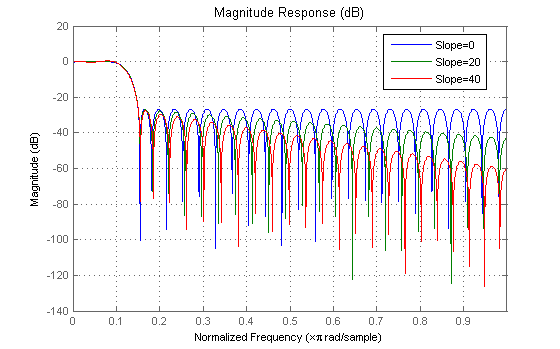
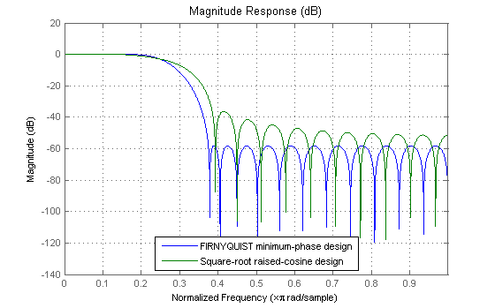
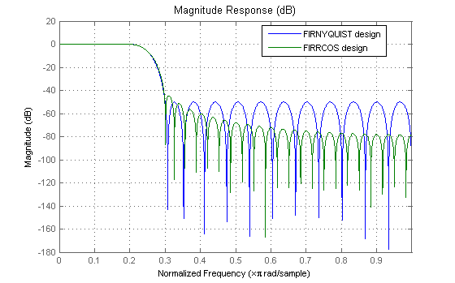
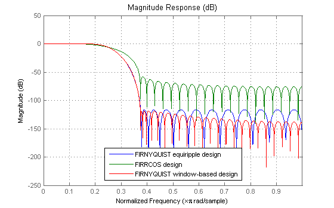
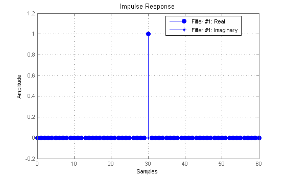
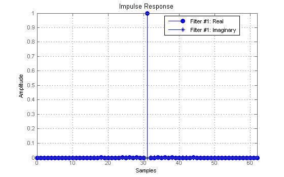
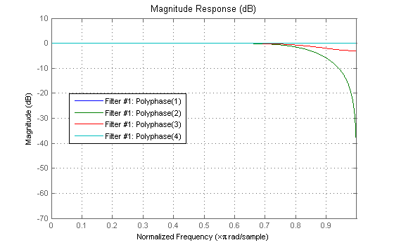

This demo illustrates the design capabilities of the FIRNYQUIST function. It also compares the filters designed with FIRNYQUIST to those designed with FIRRCOS.
Both produce lowpass Nyquist filters, widely used in pulse-shaping for digital transmission systems. These filters also find application in interpolation/decimation and filter banks.
The plot shows the magnitude response of filters designed with each function. Both filters have an order of 60 and a rolloff-factor of 0.5. Because the FIRNYQUIST filter has an optimal equiripple response, it has a larger stopband attenuation for the same filter order and transition width. The raised-cosine filter designed with FIRRCOS is obtained by truncating the analytical impulse response and it is not optimal in any sense.
N = 60; % Filter order R = 0.5; % Rolloff factor b = firnyquist(N,4,R,0,'nonnegative'); h = firrcos(N,0.25,R,2,'rolloff'); hfvt = fvtool(b,1,h,1); set(hfvt, 'Color', [1 1 1]) legend(hfvt,'FIRNYQUIST design','FIRRCOS design');
In fact, in this example it is necessary to increase the order of the raised-cosine design to about 1400 in order to attain similar attenuation.
Here we compare the impulse responses. Notice that the impulse response in both cases is zero every 4th sample (except for the middle sample). Nyquist filters are also known as L-th band filters, because the cutoff frequency is Pi/L and the impulse response is zero every L-th sample. In this case we have 4th band filters.
N = 38; R = 0.5; b = firnyquist(N,4,R,0,'nonnegative'); h = firrcos(N,0.25,R,2,'rolloff'); set(hfvt, 'Filters', [dfilt.dffir(b),dfilt.dffir(h)] ,'analysis','impulse'); legend(hfvt,'FIRNYQUIST','FIRRCOS') title('Impulse response, Order=38, Rolloff = 0.5');
FIRNYQUIST allows for control of the slope of the stopband of the filter. For example, the following designs have slopes of 0, 20, and 40 dB/(rad/sample)of attenuation:
b1 = firnyquist(52,8,.2,0); % Equiripple b2 = firnyquist(52,8,.2,20); b3 = firnyquist(52,8,.2,40); set(hfvt, 'Filters', [dfilt.dffir(b1),dfilt.dffir(b2),dfilt.dffir(b3)], 'analysis', 'magnitude'); legend(hfvt,'Slope=0','Slope=20','Slope=40')
FIRNYQUIST can return a minimum-phase spectral factor of the overall Nyquist filter (a square-root in the frequency domain). This spectral factor can be used in a similar manner to the square-root raised-cosine filter in matched filtering applications. A square-root of the filter is placed on the transmiter's end and the other square root is placed at the receiver's end.
N = 30; % Filter order R = 0.5; % Rolloff factor bmin = firnyquist(N,4,R,'minphase'); hmin = firrcos(N,0.25,R,2,'rolloff','sqrt'); set(hfvt, 'Filters', [dfilt.dffir(bmin),dfilt.dffir(hmin)]); legend(hfvt,'FIRNYQUIST minimum-phase design',... 'Square-root raised-cosine design');
The response of the raised-cosine filter improves as the rolloff factor decreases (shown here for rolloff = 0.2). This is because of the narrow main lobe of the frequency response of a rectangular window that is used in the truncation of the impulse response.
N = 60; % Filter order R = 0.2; % Rolloff factor b = firnyquist(N,4,R,0,'nonnegative'); h = firrcos(N,0.25,R,2,'rolloff'); set(hfvt, 'Filters', [dfilt.dffir(b),dfilt.dffir(h)]); legend(hfvt,'FIRNYQUIST design','FIRRCOS design');
FIRNYQUIST can also design Nyquist filters using the truncated-and-windowed impulse response method. This can be another alternative to the raised-cosine design.
For example, using the Kaiser window, we can design a filter that meets the following specs:
bwin = firnyquist('minorder',4,0.5,1.25e-6);
This designs only requires a slight increase in order (62 vs. 60) to meet the same specs as the equiripple design. (Remember that in contrast we required an extraordinary 1400th-order raised-cosine filter to meet the stopband spec.)
N = 60; % Filter order R = 0.5; % Rolloff factor b = firnyquist(N,4,R,0,'nonnegative'); h = firrcos(N,0.25,R,2,'rolloff'); set(hfvt, 'Filters', [dfilt.dffir(b),dfilt.dffir(h),dfilt.dffir(bwin)]); legend(hfvt,'FIRNYQUIST equiripple design',... 'FIRRCOS design','FIRNYQUIST window-based design');
An important characteristic of Nyquist filters is that along with its shifted versions by a factor of k/L, L being the band and k = 1,2,...,L-1 should all add up to a delay, i.e. they form a set of strictly complementary filters. (This is what makes them suitable for zero ISI transmission).
nb = -(length(b)-1)/2:(length(b)-1)/2; nbw = -(length(bwin)-1)/2:(length(bwin)-1)/2; for k = 0:3, B(k+1) = dfilt.dffir(b.*exp(2*pi*j*k*nb/4)); H(k+1) = dfilt.dffir(h.*exp(2*pi*j*k*nb/4)); Bw(k+1)= dfilt.dffir(bwin.*exp(2*pi*j*k*nbw/4)); end % Connect each set of filters in parallel Bpar = parallel(B(:)); Hpar = parallel(H(:)); Bwpar = parallel(Bw(:)); set(hfvt, 'Filters', Bpar,'Analysis','impulse'); % Pure delay (within roundoff)
set(hfvt, 'Filters', Hpar,'Analysis','impulse'); % Pure delay (within roundoff)
set(hfvt, 'Filters', Bwpar,'Analysis','impulse'); % Pure delay (within roundoff)
Besides digital data transmission, Nyquist filters are attractive for interpolation purposes. The reason is that every L samples you have a zero sample (except for the middle sample) as mentioned before. There are two advantages to this, both are obvious by looking at the polyphase representation.
Hm = mfilt.firinterp(4,4*bwin); % Interpolation filter should have a gain of L set(hfvt, 'Filters', Hm, 'Analysis', 'magnitude'); set(hfvt,'PolyphaseView','on');
The polyphase subfilter #4 is an allpass filter, in fact it is a pure delay (select impulse response in FVTool, or look at the filter coefficients in FVTool), so that: 1. All of its multipliers are zero except for one, leading to an efficient implementation of that polyphase branch. 2. The input samples are passed through the interpolation filter without modification, even though the filter is not ideal.